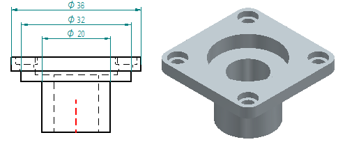
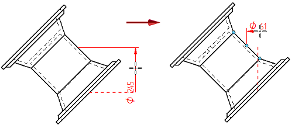
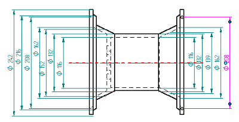
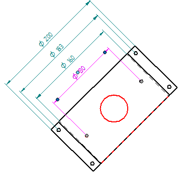
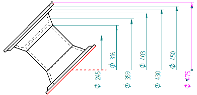

Symmetric Diameter command
The Symmetric Diameter command  places a dimension that measures the distance between a physical or implied centerline
and another element or keypoint, multiplies the distance by two, and displays the value as a diameter.
places a dimension that measures the distance between a physical or implied centerline
and another element or keypoint, multiplies the distance by two, and displays the value as a diameter.

Placing symmetric diameter dimensions
Symmetric diameter dimensions are placed parallel or perpendicular to a central axis. You can select a linear element to specify the axis, or you can select two keypoints to define an implied axis. The central axis appears as a dashed red line during placement and also during editing.
After defining the central axis, but before you click to place the first dimension, you can change the default orientation of the symmetric diameter dimension stack by holding the Alt key as you move the cursor to position the dimension. If you release the Alt key, then the dimension reverts to the previous orientation.

After placing the first symmetric diameter dimension in a group, each additional dimension is automatically added as you click succeeding geometric elements.
Adding symmetric diameter dimensions to a stack
You can add symmetric diameter dimensions to an existing dimension group. When you are prompted to select the dimension origin element, select one of the dimensions in the group instead.
Symmetric diameter dimension orientation
Before placing the first symmetric diameter dimension, you can select an Orientation option on the command bar to predefine the dimension plane. You also can use the Shift key to change between By 2 Points and Horizontal/Vertical orientations.
|
Use this Orientation option |
To place |
|
Horizontal/Vertical  |
Dimensions that are parallel or perpendicular to the horizontal edge of the drawing sheet or reference plane. |
|
Use Dimension Axis  |
Dimensions that are parallel or perpendicular to a dimension axis defined using the
Dimension Axis option For more information, see Place a dimension using a dimension axis. |
|
By 2 Points  |
Dimensions that are parallel or perpendicular to a theoretical line between the two points you are dimensioning. |
 on the command bar. To identify the dimension axis, you can select any linear element
(or two keypoints) on the model or on the drawing.
on the command bar. To identify the dimension axis, you can select any linear element
(or two keypoints) on the model or on the drawing.